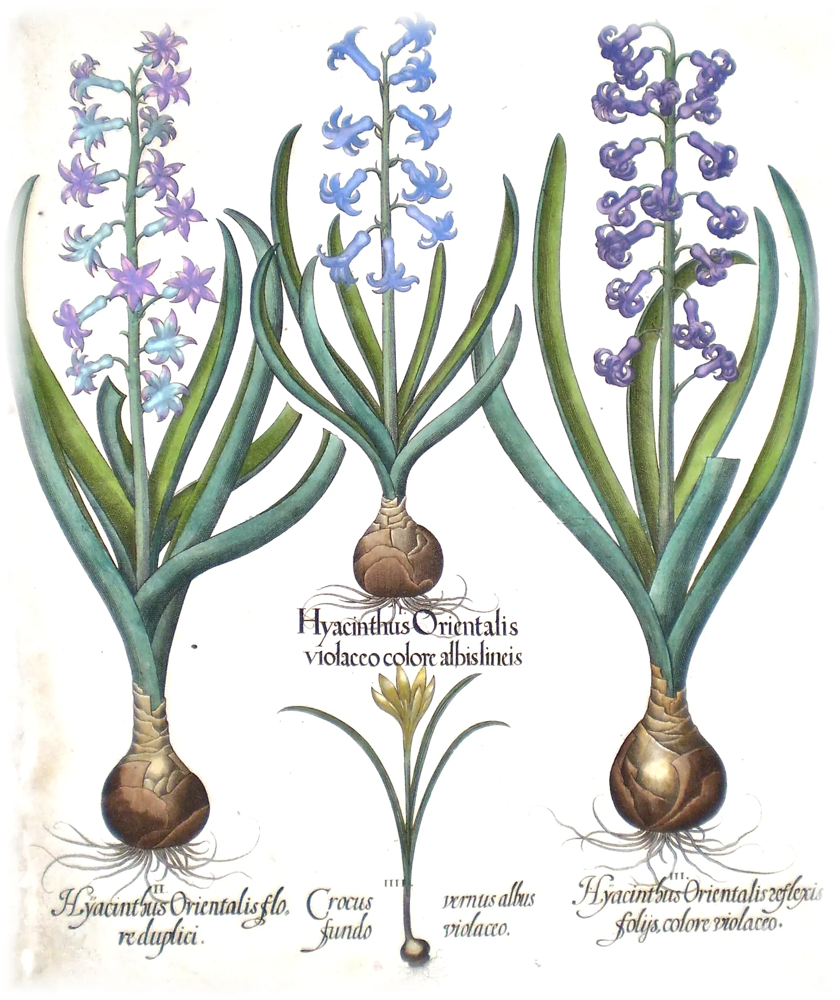
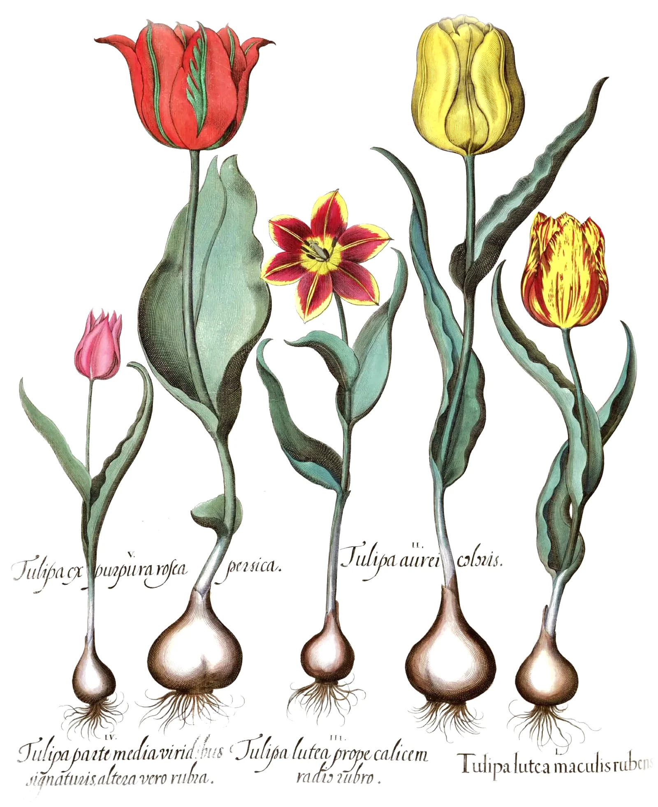
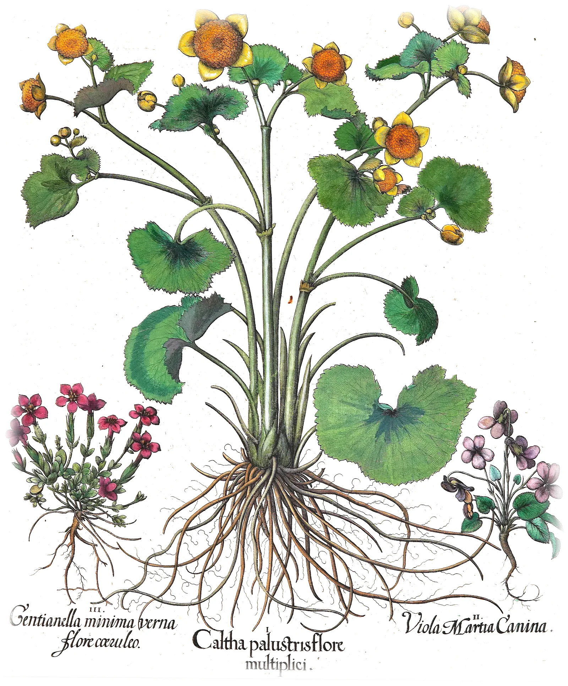
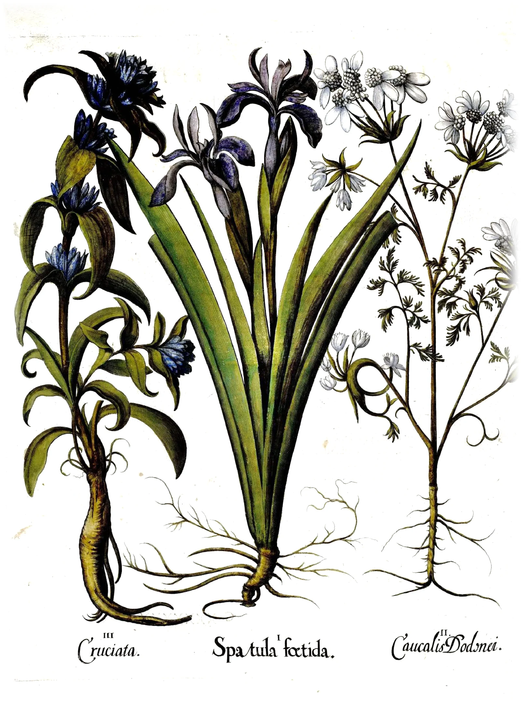
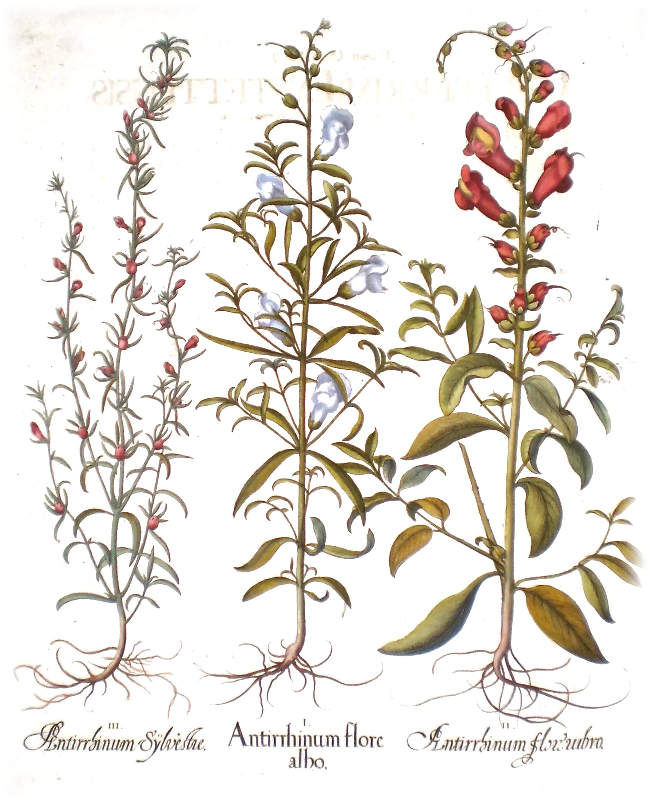
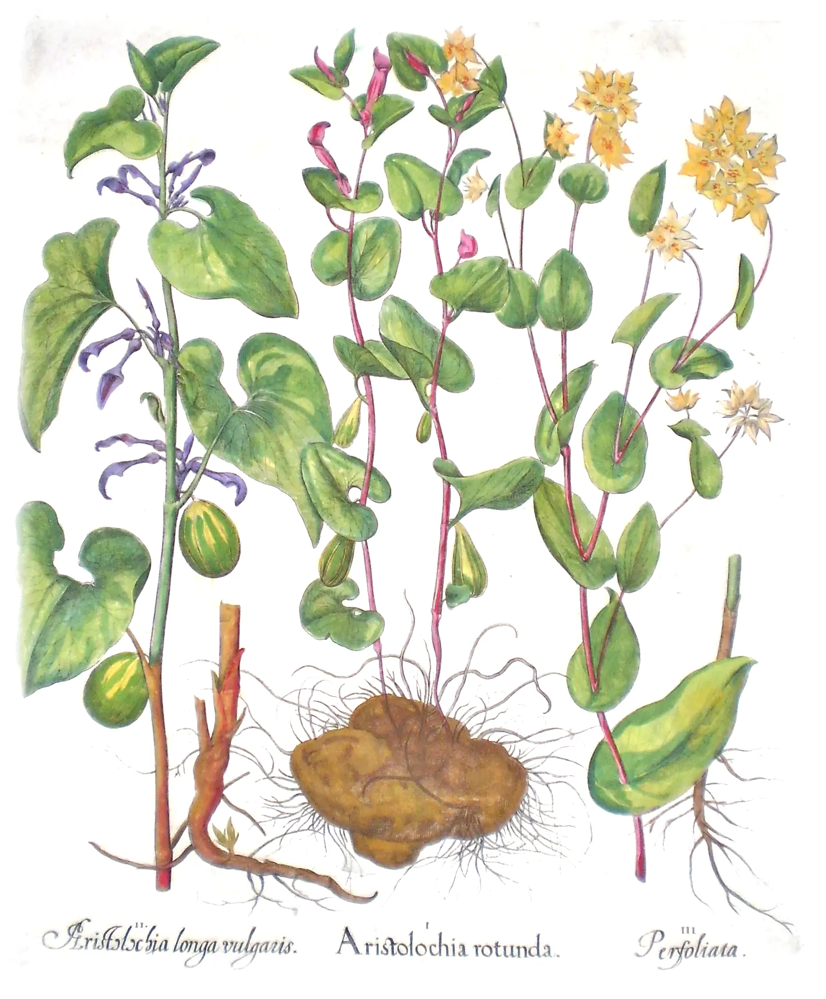
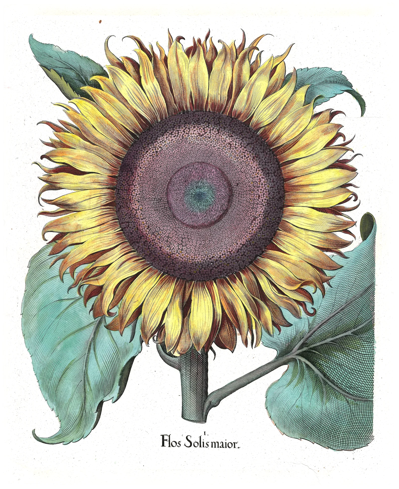
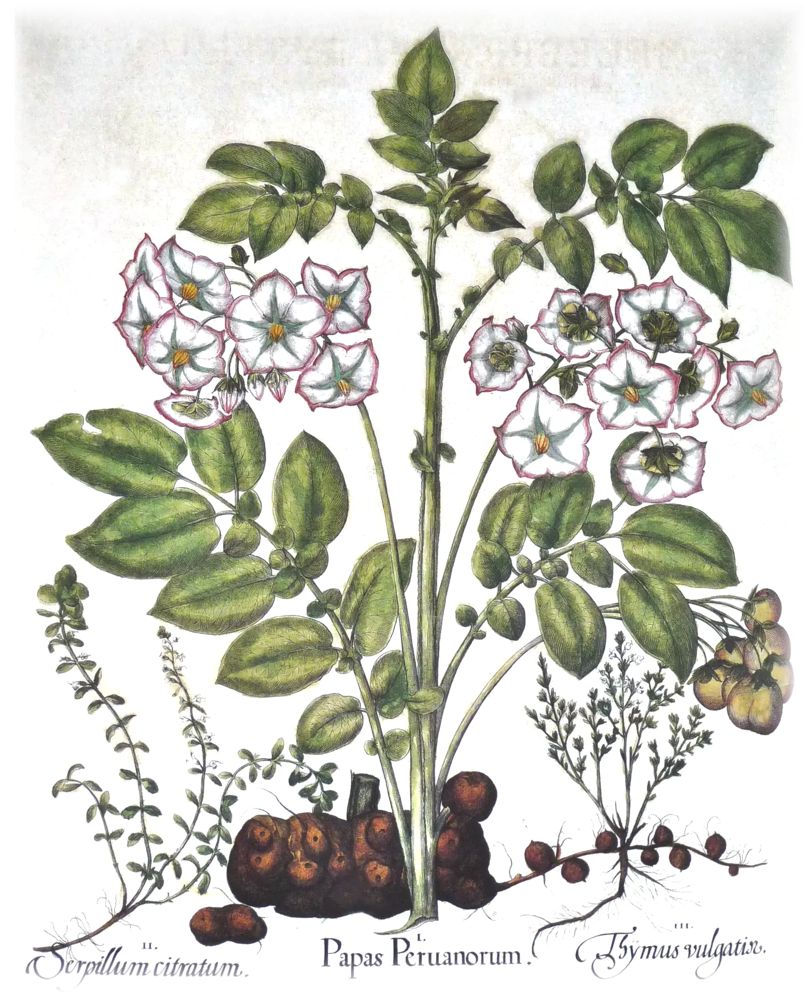

A Garden of Flowers
with an account of each: its country, its uses, and its form.
The Spring, the Summer and the Autumn
The paper is rag: old linen shirts and sheets, beaten to pulp and lifted from the vat on a wire mould, which left the faint lines you see when a leaf is held up to the light.
with an account of each: its country, its uses, and its form.
The Spring, the Summer and the Autumn
Hyacinthus orientalis.
The eastern hyacinth grows wild on stony hillsides in Syria, Lebanon and the south of Turkey, where it is a small, loose thing with a few pale blue bells. It came west from Constantinople in the sixteenth century, in the same bundles as the tulip, and the gardeners of the north have been fattening it ever since. The first here is double, its bells crowded one inside another.
The scent is the strongest of the spring: one spike will fill a room, and a bed of them on a warm evening can be smelled from the road. The bulb is round and purple-skinned; lift it when the leaves die down, dry it in the shade, and set it again in October four fingers deep. The sap makes the hands itch. The boy of the Greek story, killed by a discus, gave his name to a flower marked AI, AI, for grief. This is not that flower and has no such letters, but it took the name and has kept it.
In Holland they are grown by the acre in the sand behind the dunes, and the bulbs are sold by the hundred in autumn. A bulb set on the neck of a glass of water and kept in a dark cupboard will make roots like white string, and flower indoors in the middle of winter. After flowering, feed the bulb and let the leaves yellow of themselves: cut green, they starve it for the next year.

Tulipa Turcarum.
The Turks grew tulips long before Europe did, and our word for the flower comes from theirs for a turban, by a traveller’s mistake. Conrad Gesner saw the first one in the West in a garden at Augsburg in April 1559: red, single, and with a scent he called sweet and soft. It has no virtue in medicine. The bulb can be eaten, and in the hunger winter of 1944 the Dutch ate them boiled.
Its whole worth is the colour. Now and then a plain red or yellow flower breaks, as the growers say, into flames and feathers, and no two broken flowers are alike. For three hundred years the best of them fetched the highest prices, and nobody knew that the breaking is a virus, carried from bulb to bulb by greenfly, which weakens the plant a little more every year. Plant in November in light, poor ground, a hand deep, and lift when the stalk is dry.
The flower opens wide in the warmth of noon and closes again toward evening, and when its time is over the petals fall all at once, cleanly. The wild ones are smaller, red or yellow, from the mountains of Central Asia, and come up in the same places for a hundred years. Mice and grey mould are its enemies; keep the lifted bulbs dry and cool through the summer, and look them over before they go back in.

Caltha palustris.
It grows where the ground is always wet: in ditches and alder carr, along slow streams and in the hollows of water meadows, from Ireland to Kamchatka and across the north of America. It is among the oldest flowers of these countries, and was here at the edge of the ice. The flower is a cup of five gold sepals and no petals at all, so glossy that it looks wet in the sun; the leaves are round and scalloped at the edge.
In Ireland and the Isle of Man it was hung over the door on May Eve to keep witches from the house. Every part is sharp and blistering when fresh, and cattle leave it standing in a grazed field; the buds, boiled, were once pickled in vinegar like capers. The double kind figured here sets little seed and is kept by dividing the roots. Give it mud, and it wants nothing else.
It flowers in March and April, before the grass is up, so that a wet meadow turns gold from one end to the other in a week. The country names, kingcup and mayblob and mollyblob, are all for that gold. It does best with its feet in water and its head in the sun, and spreads slowly into a clump that can be lifted and divided after it flowers.

Spatula foetida.
Gladdon grows in the shade of woods and on chalky hedge banks in the south of England, and across the west of Europe into Africa. Bruise a leaf and it smells: of roast beef, some say, and most say of something worse. The leaves are dark, evergreen and shaped like sword blades, which gives the Latin name. The flowers of June are small and dull, a grey violet netted with darker veins, and easy to pass by.
The plant keeps its show for autumn. Then the fat green pods split in three and fold back, and inside are rows of seeds as round and orange-red as coral beads, which hold on through the whole winter, after every other colour in the wood is gone. The root was boiled in ale as a purge, and is violent; it is better left alone. The seeds are good in a jug of winter berries.
It is one of only two irises that are native to Britain; the other is the yellow flag of the riverbanks. It will grow in dry shade under trees, where almost nothing else will, and that is the best reason to plant it. The split pods, cut and brought indoors, keep their seeds for weeks in a dry jug.

Antirrhinum.
It is a plant of the dry Mediterranean, at home in cracks of rock in Spain and the south of France, and it has settled on old walls wherever it has been carried, high up in the mortar where nothing else will take. The Greek name means like a snout. Pinch the sides of the flower and the mouth opens and shuts; children have always done it.
The mouth is shut on purpose. A bee must be heavy enough to press down the lower lip and push its way in, so only the big bumblebees reach the nectar, and they come out with pollen on their backs; smaller insects are kept out. It was hung in the house against enchantment. It comes in red, white, yellow and the colour of old brick, and seeds itself where it pleases. Sow it on a wall and leave it.
In a garden it is a short-lived perennial, best grown as an annual: sow in late summer for flowers the next June, and pinch out the tops to make it bushy. The French call it gueule-de-loup, the wolf’s jaw, and English children call it lion’s mouth. In a wet summer rust spots the leaves; pull those plants out, and sow fresh ones somewhere else the next year.

Aristolochia.
Its name is Greek for the best of births. The flower is a long yellow tube swelling at the base, and by the old rule that a plant shows on its face what it is good for, the shape told physicians it belonged to childbirth; for two thousand years it was given to women in labour to bring away the afterbirth. The round kind has a root like a brown stone.
The flower is a trap. Small flies crawl down the tube and cannot climb back past the hairs that point inward; they are kept overnight until the flower sheds its pollen on them, and then the hairs wither and let them go. It grows in vineyards and stony places in the south, and in England most often by the ruins of nunneries, where it was planted. The leaves are heart-shaped and smell rank when bruised, and the festoon butterflies of the south lay their eggs on nothing else, so that their caterpillars carry its poison and the birds leave them alone. We know now that it poisons the kidneys slowly and causes cancers years after. Grow it for the flower, and take nothing from it.

Flos Solis maior.
It came from the Americas, where it had been grown for its seed for thousands of years, and reached Spain in the sixteenth century. Gerard heard of one twenty-four feet high in the royal garden at Madrid, and grew it fourteen feet in his own at Holborn. The head is as wide as a dinner plate and ringed with yellow rays; the middle is a thousand small flowers set in two sets of spirals turning against each other, thirty-four one way and fifty-five the other.
Young plants turn their heads after the sun from east to west, and back again in the night; when they flower they stop, and face the morning. The buds, boiled before they open and eaten with butter and vinegar like artichokes, Gerard thought exceeding pleasant meat. The seeds feed birds, hens and people, and press to a sweet oil.
Sow it in April against a warm wall, a foot apart, and stake the stems before July. One head will give a thousand seeds, and the birds will have every one of them unless the heads are cut first and hung to dry in an airy shed.

Papas Peruanorum.
It comes from the high Andes, where it is grown on terraces above the height of any grain, and where the frost of the nights is used to freeze-dry it into chuño that keeps for years. The Spaniards brought it home in the 1570s, and it passed from hand to hand among botanists; Clusius grew it in Vienna from two tubers sent him in 1588, and Gerard had himself engraved holding a sprig of its flowers.
Those flowers are white or lilac stars with a yellow beak, a nightshade’s, for it is one. The leaves, the green berries, and any tuber turned green by the light are poisonous; the tubers themselves, boiled or roasted in the embers, are wholesome and filling. Set them in spring in deep, loose ground, earth them up as the stems grow, and lift them when the haulm dies down. In the year of this book it was a curiosity, grown for its flowers. Within two hundred years whole countries lived on it, and when the blight came to Ireland in 1845 a million people died.

The garden these flowers were drawn from was laid out in terraces on the walls of the Willibaldsburg above Eichstätt, for the Prince-Bishop Johann Konrad von Gemmingen, who sent cut flowers to Nuremberg in boxes, week after week through three seasons, to be drawn. He died in 1612, the year before the book was finished. Soldiers sacked the castle in 1634 and the garden went with it; the copper plates outlasted it by almost two centuries, until they were melted down for their metal. What is left of the garden is the book.
Finis.
The plates were printed in black from copper and painted afterwards by hand, copy by copy, so no two books are quite alike: in one the tulip is flamed with crimson, in another with purple, and a colourist with the living flower in front of him worked differently from one copying a neighbour’s book. These leaves come from several copies, coloured in different workshops, bound here into one.